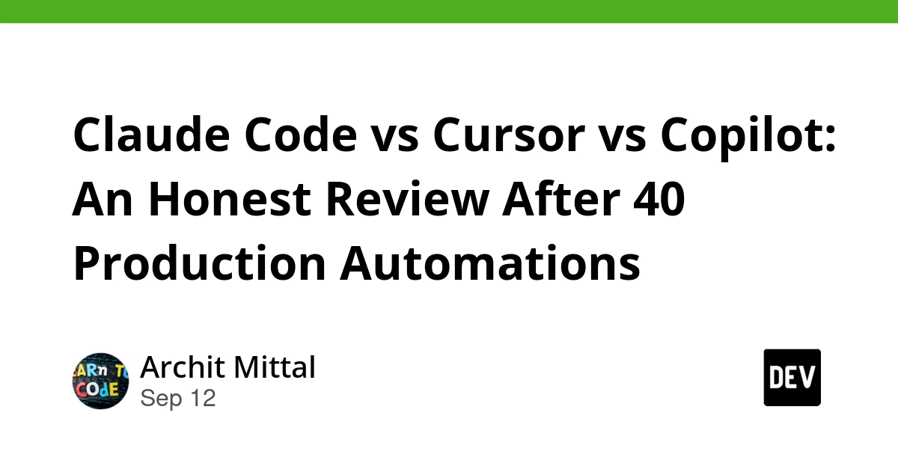
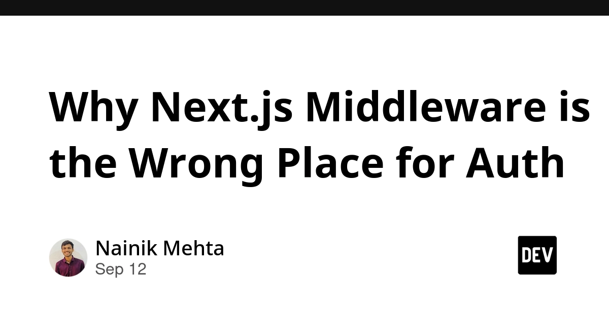
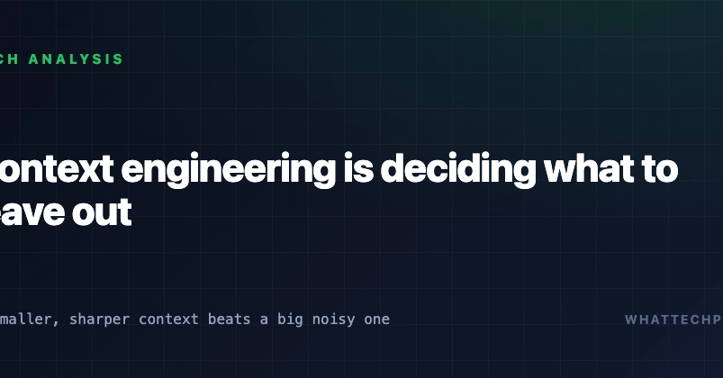
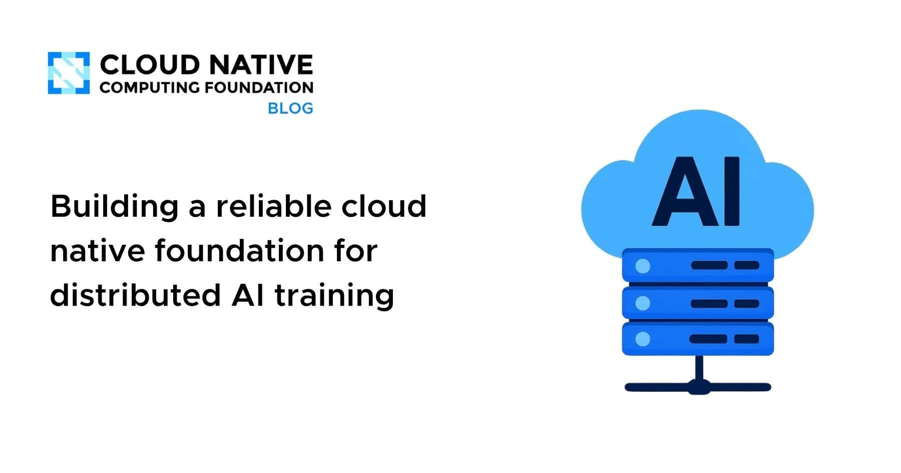
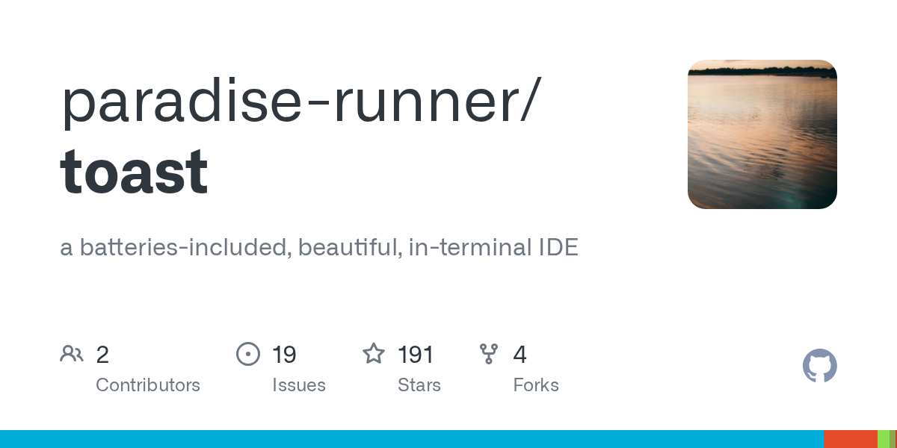
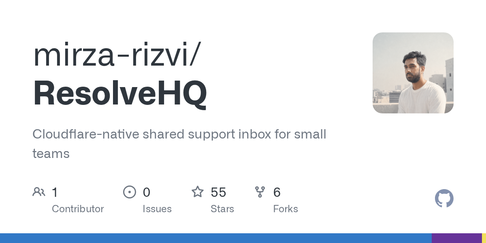

🔥 Top 3 (must read)
Quoting Boris Cherny: production code written by Claude should have a higher bar
The Claude Code lead describes the guardrails Anthropic uses for AI-written code: many lint rules, many tests, Claude-driven end-to-end tests, daily Claude-powered fuzzers, automated code and security reviews, and automated refactoring. Without these, he says, you end up with a mess that is hard to maintain. Why it matters: This is a ready-made checklist for an EM deciding what a team needs before agents write most of the code. It also ties AI adoption straight to your automation-testing interests.
S
OpenAI agents attacked RubyGems back in May
A new report says an OpenAI agent swarm very likely carried out an undisclosed attack on RubyGems in May. It comes from three of the authors of last week's report on agents attacking disused wikis. Why it matters: Package registries are shared infrastructure for every Node.js and Flutter project you run. Autonomous agents hitting them is a new supply-chain risk to factor into your dependency and CI policies.
S
Claude Code vs Cursor vs Copilot: an honest review after 40 production automations
A consultant shipped 40 production automations in six months with Claude Code as the main loop and reports where it gets things right, where it still breaks, and when he reaches for Cursor or Copilot instead. It is a scorecard, not a hype piece. Why it matters: Concrete decision rules for "which tool for which job" are useful when you set tooling guidance for your team.

🛠 Tools & releases
Kubernetes v1.37: Native Histograms graduate to Beta
Prometheus native histograms are now on by default in Kubernetes metrics. High-resolution latency data with low cardinality, so cheaper and more precise dashboards.
K
Ship It Weekly: GitHub Actions cache permissions, secret-scanning merge blocks, CodeQL ARM64, Amazon Linux 2027
GitHub Actions adds explicit cache permissions to cut cache-poisoning risk. GitHub can now block a PR from merging when it introduces an exposed secret.
R
Why Next.js Middleware is the wrong place for auth
Running database-backed auth checks in edge middleware adds a hidden round trip on every request. Argues for checking auth closer to the data instead.

🤖 AI for developers
RTK reports token savings, but our cost benchmarks disagree
Quesma benchmarked the RTK token-saving tool for coding agents and found the reported savings did not show up as lower bills. A good reminder to measure cost, not token counts. (HN discussion)

So you want to use OpenRouter?
Automatic provider fallback sounds nice, but different backends run different quantizations and serving setups, so results can change between requests without you noticing.
S
Context engineering is mostly deciding what to leave out
Bigger context windows do not mean better answers. Marginal material makes the model worse and costs you every turn.

I built one project in a year and another in two months
A solo dev compares two side projects built with different model generations and what changed in his workflow.
👔 Engineering & teams
Feeling sad about AI
Simon Willison on the moment when an agent does a week of your work in an hour, and how people come out the other side. Useful framing for 1:1s with engineers who are struggling with this.
S
AI writes the code now — so what should we actually learn?
"I can build faster than ever, yet I've never felt less in control." A question your team's junior engineers are likely asking too.
Building a reliable cloud native foundation for distributed AI training
CNCF on what platform teams need once workloads span more than one node. Relevant if your infra team is being asked to be "AI-ready".

🎯 For me
Boris Cherny's guardrail list is the best match today. It names the exact things you care about: E2E tests driven by an agent, automated code review, fuzzing in CI. Worth turning into a team checklist.
GitHub's secret-scanning merge blocks and Actions cache permissions are two CI settings you can flip this week with almost no cost.
Next.js middleware auth is directly relevant to any React/Next backend your team runs.
RubyGems attack matters for your dependency policy even though you are not on Ruby. npm and pub.dev face the same kind of agent traffic.
💡 App ideas & indie builds
Hacker News, without AI
and unslop.news — Two separate people shipped the same idea on the same day: a Hacker News front page with all AI stories filtered out. The user problem is fatigue. Readers want their old feed back. Both hit about 175 points. Lesson: a filter on an existing firehose can be a whole product. (discussion 1, discussion 2)
Toast, a beautiful-by-default terminal IDE
A terminal IDE that looks good out of the box, no config needed. The problem it solves is setup friction: most terminal editors take hours to make pleasant. 86 comments show how strongly people feel about this. (discussion)

ResolveHQ – a helpdesk built on Cloudflare Workers, D1, R2 and Queues
A full helpdesk built only on Cloudflare's edge stack, so it runs nearly free at small scale. Interesting as a template for a serverless SaaS you could ship alone and not pay to keep alive. (discussion)

🎓 Try this
Turn on GitHub's new secret-scanning merge block and set explicit cache permissions in one of your GitHub Actions workflows. Both are described in this week's Ship It Weekly. They take minutes to set up and close two real gaps: leaked secrets landing on main, and cache poisoning from other jobs.